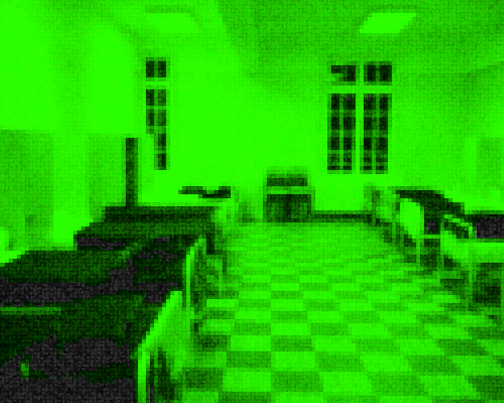

Je suis Alan Rockwell, je suis l'un des deux prisonniers choisis pour participer à l'opération
Nouveaux Nomades. J'ai été déplacé dans un petit établi en attendant le jour de la mission. Cela
devait faire deux ou trois jours que j'étais là quand le deuxième participant m'a rejoint.

12 Juin 2750 23h15: Centre de transfert de la prison
Une jeune femme entre dans la pièce et s'assoit sur le lit à l'opposé du mien. Elle me regarde
rapidement puis secoue la tête.
Elle me juge déjà? Pensais-je.
Sarah: Tu n'as pas l'air prêt pour ce qui s'en vient.
Alan: Tu juges les gens 30 secondes après les avoir rencontrés?
Sarah: Je ne te juge pas je fais un constat des faits, tu sais te battre?
Alan: Me battre? je me débrouille. Pourquoi?
Sarah: Tu penses qu'on va pourvoir prendre les ressources des autres fort, juste comme ça
et qu'ils vont te laisser partir avec leur bouffe.
Alan: Je pensais qu'on allait là-bas en tant que négociateurs.
Sarah: Tu penses que les gens vont te laisser négocier avec ce qui les tiennes en vie?
C'est pas comme si on manquait réellement de ressources ici.
Alan: Je ne suis pas sûr de te suivre.
Sarah: On parle d'un protocole d'état qui vise à prolonger la survie de l'humanité et tu crois que
y'ont pas pensé à assurer un moyen de produire de la nourriture à l'intérieur du Fort.
Les portes se sont fermées ya un peu plus de 200 ans. C'est impossible que l'on soit réellement
à court de ressources.
Alan: Donc l'opération serait un mensonge?
Sarah: Non, l'opération doit réellement avoir lieu, mais je serais tenté de croire qu'on ne sera pas les
premiers à être envoyés à l'extérieur.
Alan: Si on a réellement plus de ressources que ce que le gouvernement nous dit, alors faudrait trouver où ils sont rangés.
Sarah: Tu veux t'enfuir et sortir d'ici pour trouver une supposée "mine de ressource" dans le fort?
Alan: On a deux options soit on cherche où le gouvernement cache ses ressources, soit on attend gentiment ici,
qu'on vienne nous chercher pour mener la mission.